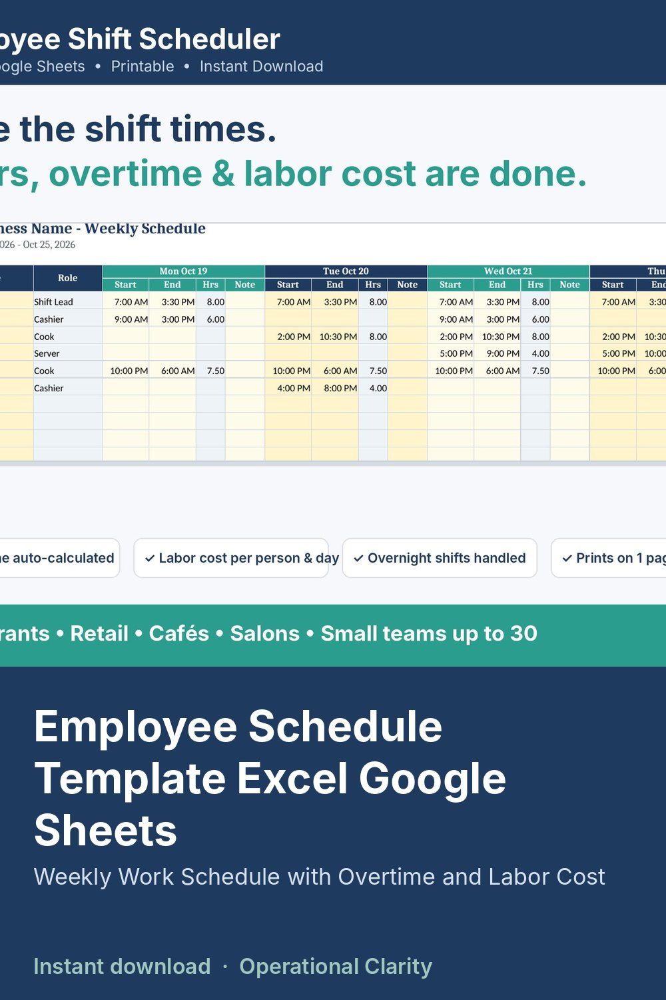

Employee Schedule Template Excel Google Sheets

EMPLOYEE SHIFT SCHEDULER | Weekly Work Schedule Template with Automatic Hours, Overtime and Labor Cost | Excel + Google Sheets + Printable PDFs
Type each shift's start and end time. The schedule calculates hours, unpaid breaks, overtime and labor cost for every employee and every day. Then print it on one page and post it.
WHAT IT DOES
• Weekly schedule for up to 30 employees. Pick names from a dropdown, enter start/end times, leave blank for days off.
• Hours per shift calculated automatically. Overnight shifts (e.g. 10 PM - 6 AM) handled correctly.
• Unpaid break deducted automatically for long shifts (you set the rule, or turn it off).
• Weekly total hours, overtime hours and labor cost per employee (overtime threshold and multiplier are editable).
• Flags anyone scheduled over their max hours.
• Labor Summary: staff count, scheduled hours and labor cost for each day, with a chart.
• Dates fill in automatically from the week start date.
• Prints on one landscape page. Hide the pay columns before posting if you want.
WHAT YOU GET (3 files)
• Employee_Shift_Scheduler.xlsx: START HERE, WEEKLY SCHEDULE, LABOR SUMMARY, EMPLOYEES, SETTINGS
• BONUS printable blank weekly schedule PDF (Monday-start)
• BONUS printable blank weekly schedule PDF (Sunday-start)
PERFECT FOR
Restaurants, cafes, retail shops, salons, bakeries, daycares, cleaning crews, and any small team that schedules shifts.
COMPATIBILITY
Microsoft Excel. For Google Sheets, upload the .xlsx to Google Drive and open it with Google Sheets. The PDFs print on US Letter paper.
GOOD TO KNOW
• Example employees and shifts are included so you can see how it works. Just overwrite them.
• Overtime and break rules are editable defaults. Set them to match your local labor laws.
• Labor cost is an estimate based on the hourly rates you enter. It is not payroll or tax software.
• This is a digital download. No physical item will be shipped.
• Personal / single-business use. No reselling or sharing of the files.